Move, rotate, or edit a hem
In the ordered environment, you can edit the hem feature to change such things as the hem type and material setback.
You can move a hem along the face, rotate a hem, or edit the hem feature.
Edit a hem feature in the ordered environment
-
Select the hem.
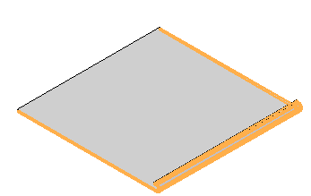
-
Click the Edit Definition button.
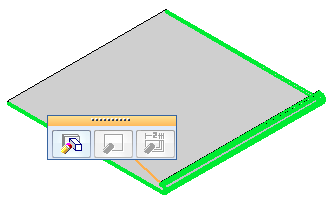
-
Use the Hem command bar and Hem Options dialog box to make changes to the hem.
-
Click the Finish button.
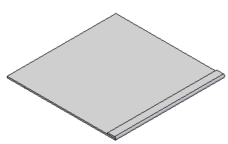
Move a hem in the synchronous environment
-
Select the hem.
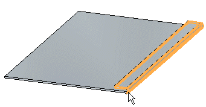
-
Click the steering wheel axis shown.
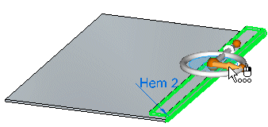
-
Move the cursor until the face is positioned where you want it, then click.
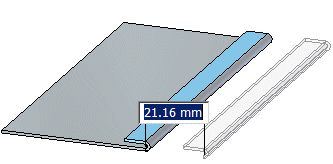
Rotate a hem in the synchronous environment
-
Select the hem.
-
Click the steering wheel torus shown.
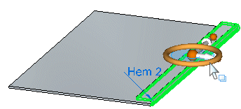
-
Move the cursor until the face is positioned where you want it, then click.
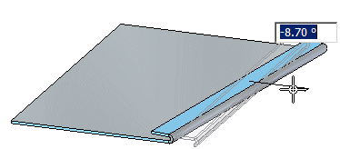
Edit a hem feature in the synchronous environment
-
Select the hem.
-
Click the edit handle.
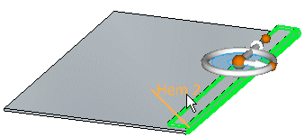
-
Use the Hem QuickBar and Hem Options dialog box to make changes to the hem.
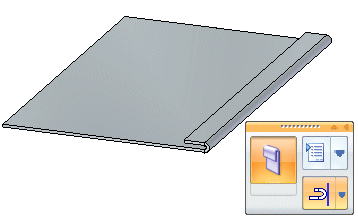
-
Click to save the edit.
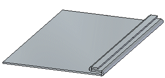
How do I
Construct a hemLook up more details
Hem commandHem command bar
Hem Options dialog box
Hem command bar